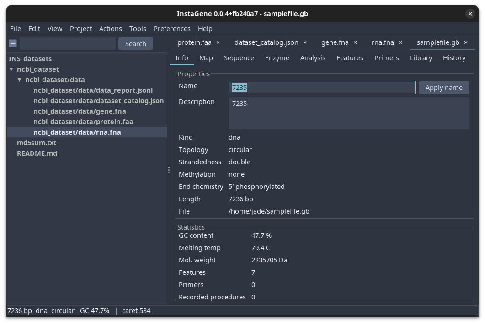
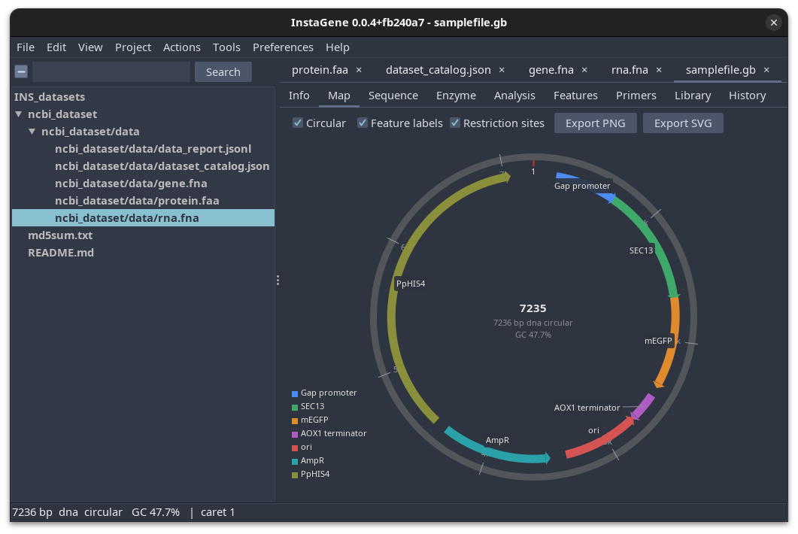
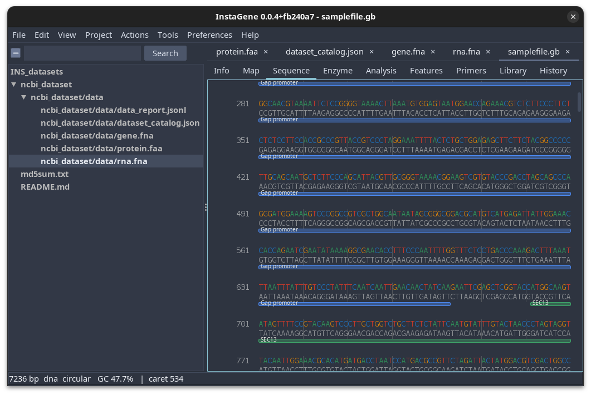
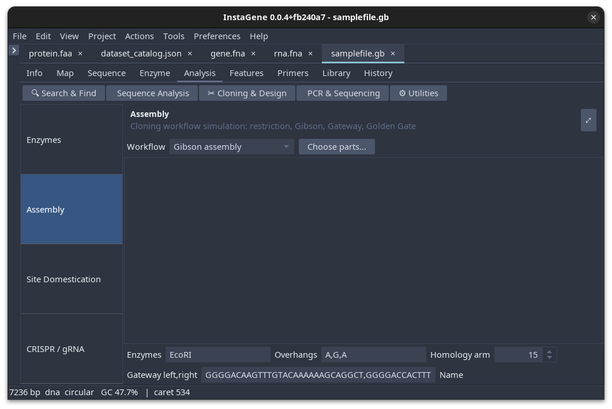
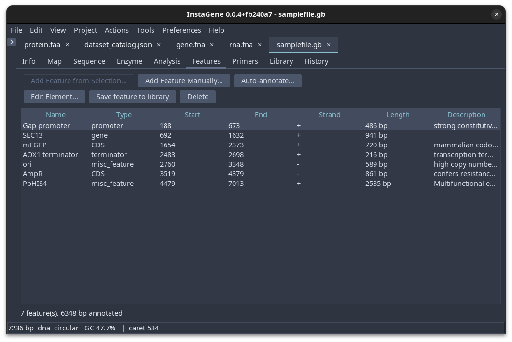
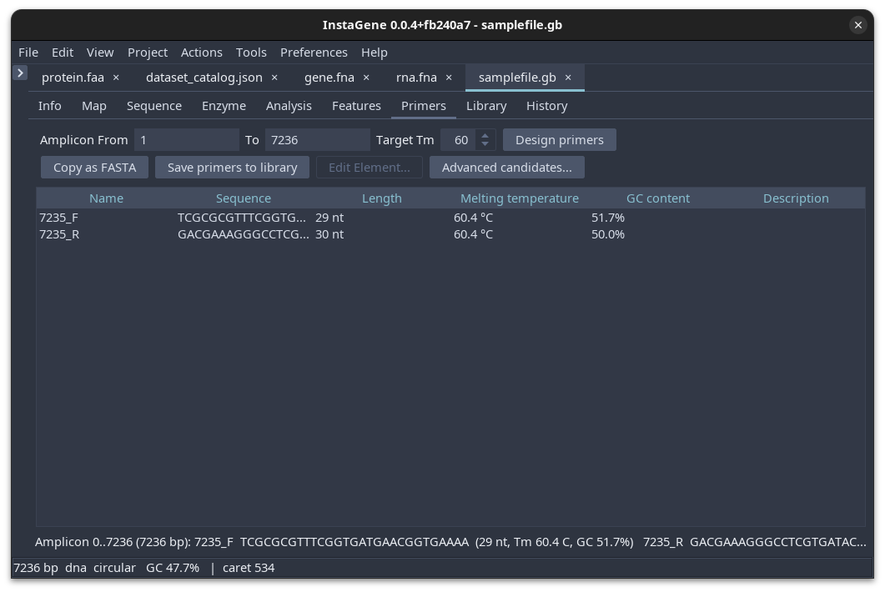
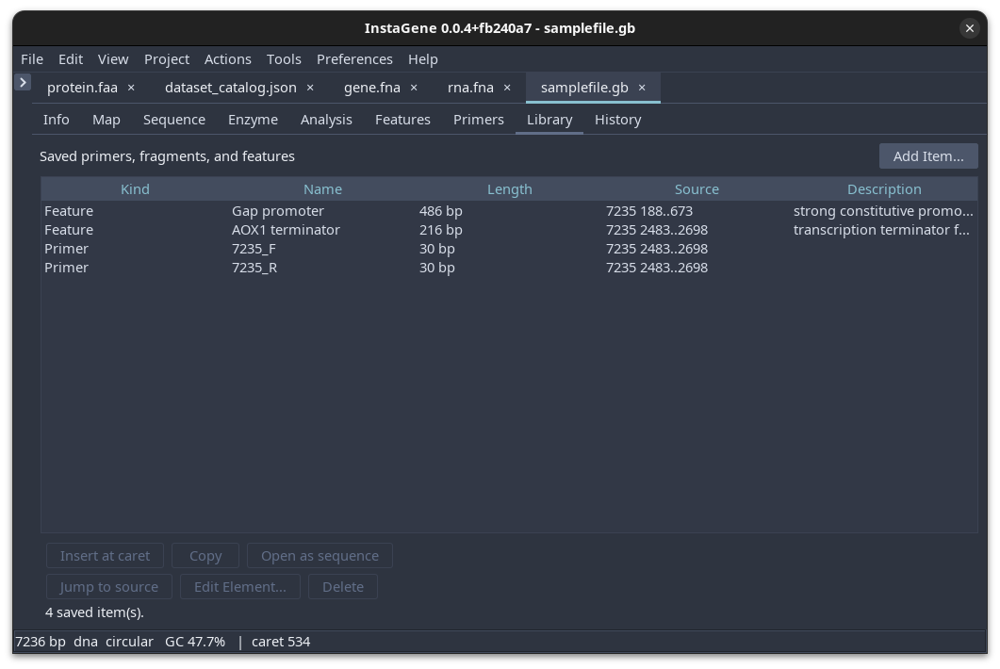
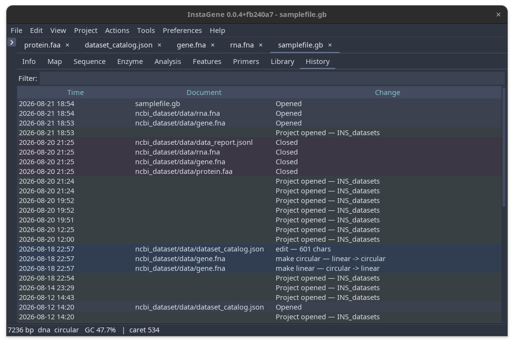

Desktop GUI guide¶
The desktop application is InstaGene's main researcher-facing workspace. It combines document tabs, a project browser, sequence editing, annotation tools, maps, restriction analysis, primer design, and analysis workflows in one application.
Launching¶
Use a native installer when possible. Native Windows, macOS, and Linux packages bundle their Java runtime. The portable JAR requires Java 21 or newer.
Most users launch the installed application from the Windows Start menu, macOS Applications folder, or Linux application menu. You can also launch it from a terminal:
The optional file argument opens when the application starts. You can also open files later from the welcome screen, the File menu, or drag-and-drop.
First-use workflow¶
- Open a sequence or project from the welcome screen.
- Confirm the record identity and molecule properties on Info.
- Use Map for a circular overview or Sequence for base-level work.
- Review or create annotations in Features.
- Check restriction sites in Enzyme before choosing an assembly strategy.
- Design primers in Primers, then save them to Library if they should be reused.
- Use Analysis for higher-level calculations and workflows.
- Use History to review edits and recorded project operations.
The tool tabs are shared across document tabs. Changing the active document binds the panels to that document; it does not create a separate tool panel for every open file.
Workspace tabs¶
Info¶

The Info tab is the quickest sanity check after opening a file. Review the name, description, molecule type, topology, methylation, end chemistry, length, file path, GC content, melting temperature, molecular weight, feature count, and primer count. Edit the name or description only when you intend to change the record metadata, then save the document.
Map¶

Map displays circular or linear sequence features overlay in sections over the sequence. For circular plasmids, use the controls to show feature labels and restriction sites. Select a feature or map region and the same region will be selected in the sequence and feature tools. The map can be exported as PNG or SVG for reports and records.
Sequence¶

Sequence is the direct nucleic base editor. It displays nucleotide or protein text with features highlight. It also displays selections coordinates. Use the Edit menu for reversible changes, keyboard selection, clipboard operations, and zoom controls. Save before closing if the edit should be retained.
Enzyme¶
The Enzyme tab lists the enabled restriction-enzyme catalog and the cut count for the active sequence. Select an enzyme to inspect individual sites, check enzymes for a working digest, and review the resulting fragments. The panel also supports custom enzyme definitions and catalog preferences. Large-sequence cut counts arrive asynchronously so the editor remains usable while a scan is running.
Analysis¶

Analysis groups workflows by task rather than by file format. Depending on the selected workflow, you can explore search and find, sequence statistics, graph profiles, ORFs, alignments, Sanger reads, NCBI/BLAST queries, virtual gels, assembly, recombination, CRISPR guides, site domestication, and calculators. Read the inputs and warnings shown by each workflow before treating a result as an experimental decision.
Features¶

Features is the annotation table. It shows name, type, start, end, strand, length, and description. Add a feature from a selection, create one manually, edit its qualifiers, display properties, delete it, or save it to the feature library. Auto-annotation can scan the sequence in order to annotated based on the bundled feature presets or any user defined annotation profiles; review matches before saving them to the record.
Primers¶

Primers designs candidates for a selected or explicitly entered amplicon. Set the target melting temperature, inspect length, Tm, GC content, and sequence, then copy the pair as FASTA or save it to the Library. Candidate screening is a design aid; check primer specificity, synthesis constraints, and the intended reaction conditions separately.
Library¶

Library stores reusable primers, fragments, and features. Select an item to copy it, edit it, delete it, open it as a sequence, or jump to its source annotation when a source record is available. The library is user preference-backed, so keep project-specific records and reusable lab assets organized intentionally.
History¶

History records opened and closed documents, project operations, edits, and important molecule changes. Use it to understand how a record reached its current state and to support reproducibility. History is an audit aid, not a replacement for version control or a laboratory notebook.
Menus and common actions¶
File¶
- Open and Open Project load sequence files or project folders.
- Recent Files and Recent Projects reopen previously used locations.
- Save and Save As write the active record.
- Close Tab closes one document after the normal unsaved-change check.
- Exit closes the window, persists project state, cleans up workers, and asks about unsaved documents before the application exits.
Edit and View¶
Edit provides undo, redo, clipboard operations, selection, and sequence edits. View provides zoom, panel navigation, the file browser, and theme controls. The platform menu shortcut is Ctrl on Windows/Linux and Command on macOS.
Project¶
Projects keep a folder of sequence and supporting files together. The project browser can open files in tabs, search project content, manage collections, and run supported batch operations. Project manifests and edit history are stored inside the project folder; keep them with the project when moving it between machines.
Tools and Actions¶
Tools exposes restriction-enzyme management, primer actions, library actions, analysis workflows, and optional external tools. Actions provides shortcuts to the analysis workflows most often used from the active sequence.
Saving and format choice¶
Use GenBank when the record has annotations, primers, circular topology, provenance, or molecule properties that should survive a round trip. Use FASTA for a simple sequence or when a downstream tool specifically requires it. GFF3 is useful for annotation-centric exchange, but it should be checked against the associated sequence before use.
Responsiveness and large files¶
File parsing and large digest scans are designed to run away from the Swing event thread. Some workflows continue in the background and apply results only when they still match the active document. Loading a very large genome can still require substantial memory and time; use a machine with enough RAM and avoid opening multiple copies unnecessarily.
Troubleshooting¶
| Symptom | What to check |
|---|---|
| File does not open as a sequence | Check the extension and first lines; unknown or proprietary formats may need a converter. |
| Features disappear after export | Prefer GenBank; FASTA does not carry the full feature table. |
| A digest table is temporarily empty | Wait for the asynchronous scan, or check that the active document is a nucleotide sequence. |
| A project opens without expected files | Keep the project manifest and files together; inspect the project browser paths. |
| The app does not start | Try the native package, verify the portable JAR uses Java 21+, and check that the OS has a display session. |